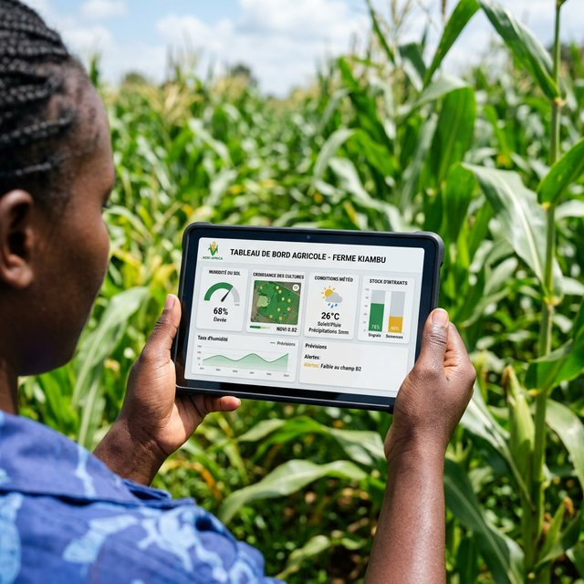

Au cœur du continent, la grande agriculture performante de demain a vitalement, grandement et activement enfin commencé une forte et très bienvenue importante mutation profonde grandement favorisée et propulsée en grande échelle par les spectaculaires essors du révolutionnaire secteur digital très moderne indispensable aujourd'hui aux cultivateurs, producteurs ou regroupements coopératifs du monde rural moderne et de ses nombreux agro-industriels très investis. En associant judicieusement les plus fortes analyses fines de la très précieuse donnée concrète captée directement du terrain fertile, de l'irrigation aux moissons, l'expertise pointue et logicielle complète proposée et mise habilement en place techniquement par le cabinet MDS vient véritablement aider et supporter sereinement toute la chaîne vitale des immenses récoltes vivrières ou d'exportations modernes.

Données de production sur smartphone : superficie, intrants, rendements, incidents, GPS — sans connexion.
Rendements par culture, parcelle et saison, comparatif, alertes et prévisions de récolte.
Du producteur au consommateur : registre des lots, contrôles qualité, certifications, QR codes.
Calcul automatique volumes et prix, virement Orange Money, MTN MoMo, Wave pour les producteurs.
Producteurs, offres, acheteurs, commandes, cotation, négociation et suivi de livraison.